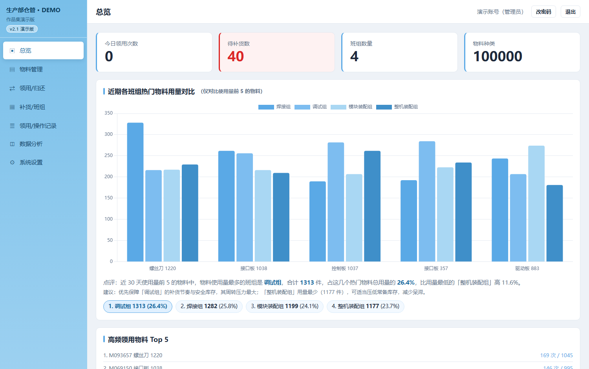
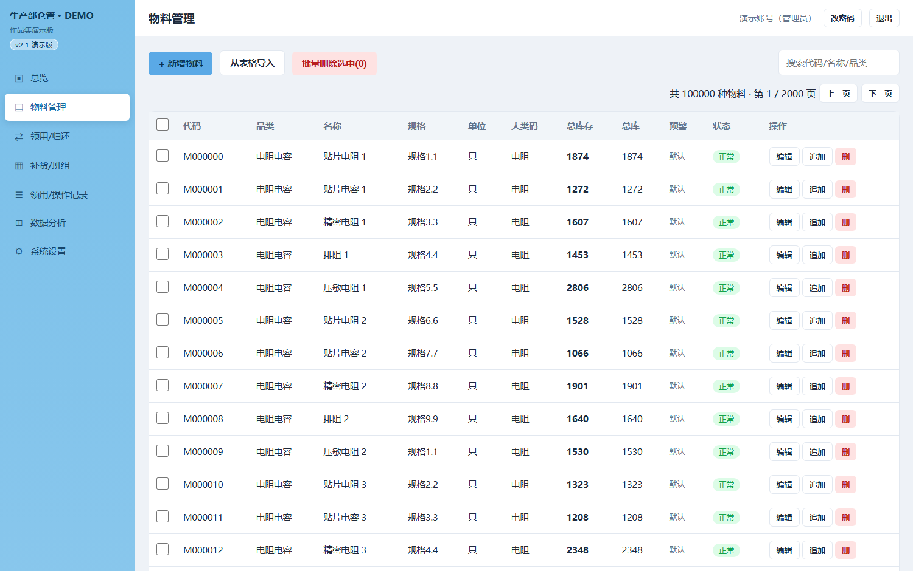
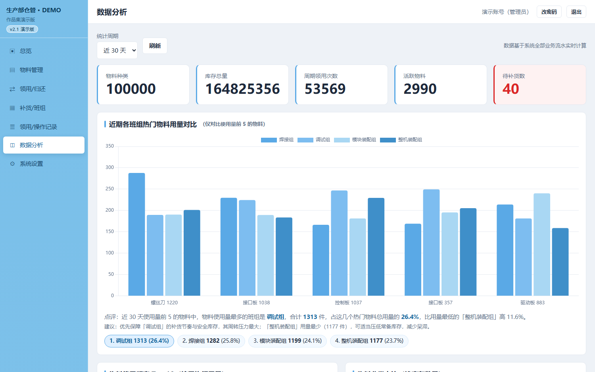
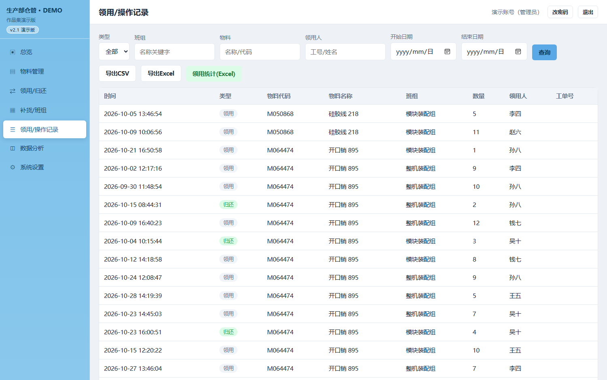
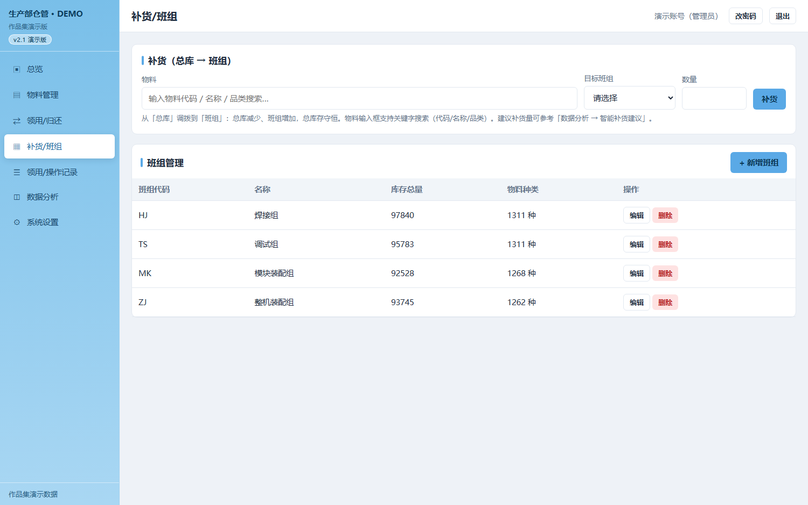

车间元器件出入库原先靠人工登记，多人、多班组同时操作时数据不同步；库存低于安全值没有提示，补货靠回忆；想看「哪个班组领用最多、哪些物料最常用」只能翻纸质台账。系统把这几件事统一到一套带账号权限的 Web 界面里，浏览器打开即用，不需要在每台工位机装客户端。
服务端完全用 Node.js 内置模块实现，不装 Express、不装数据库、不依赖 npm 包；刻意避开 Node 14+ 语法以兼容 Windows 7 上的 Node 13.14。整套服务连同运行时可打包为便携目录，在内网离线机器上解压即用。





点击图片可查看原图。截图取自系统实际运行界面，已做脱敏处理。